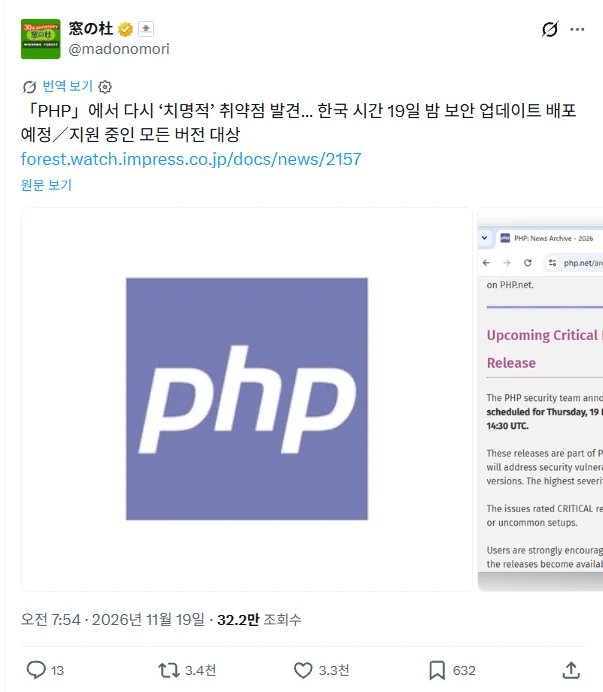
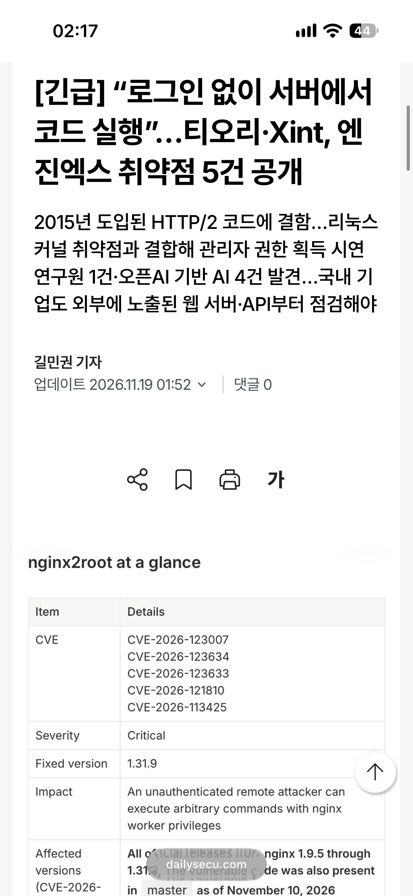
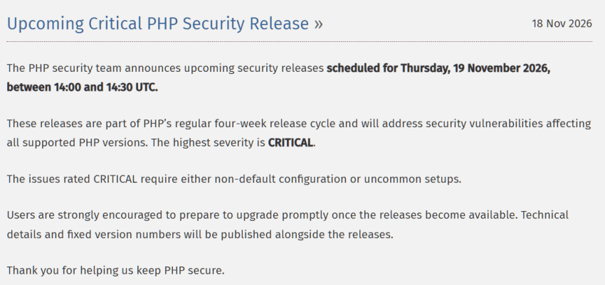
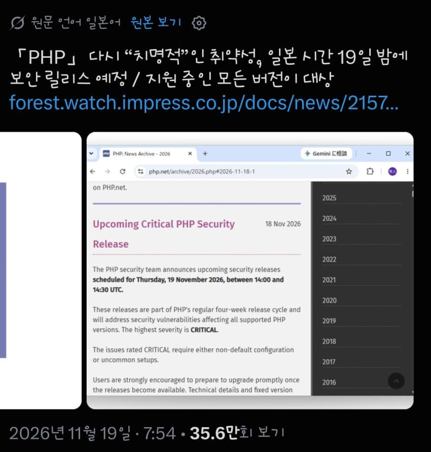
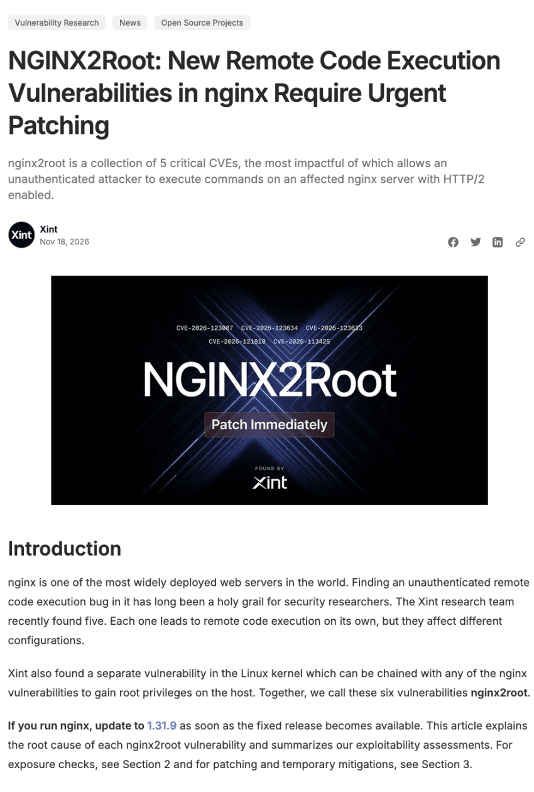

또 치명적인 취약점 발견됨
싱갤 이미지 업로드 또 막히게생겻노

지난번 php2shell처럼 rce인데 비교적 조건을 덜타는 엔진엑스에 ㄷㄷ 심각도도 크리티컬 php2shell과 동급
또 싸이트들 문 닫고 긴급점검 때리겠구만..

19일 밤에 보안패치 배포 예정


얘네도 터졋슴
HTTP/2 취약점은 Nginx가 2015년에 HTTP/2를 도입한 이후로 존재해 왔습니다.
2026년 11월 10일 스냅샷에서, Nginx 버전이 확인된 호스트의 98.9%가 영향을 받는 버전 범위 내의 릴리스를 실행하고 있었습니다.
Xint는 사람의 개입 없이 최초의 결함을 발견했으며, 연구원들은 시스템 충돌 이후에도 해당 결함을 추적했습니다.
어떻게 해결해야 하나요?
수정된 Nginx 릴리스 또는 공급업체의 보안 업데이트가 제공되는 즉시 적용하십시오.
즉시 업데이트할 수 없는 경우, 수정 사항이 적용될 때까지 영향을 받는 모든 Nginx 리스너에서 HTTP/2를 비활성화하십시오.
이렇게 하면 HTTP/2 관련 취약점을 완화할 수 있습니다. 나머지 네 가지 CVE 및 Linux 커널 관련 취약점에 대해서는 별도의 권고 사항을 따르십시오.
수정 사항을 적용하세요
nginx.org에서 최신 버전 으로 업데이트 1.31.9하거나, 공급업체의 보안 업데이트를 설치하세요.
업데이트 후 nginx를 재시작하십시오.nginx -s reload 는 소용없습니다.
원격 실행 취약점.
5개이며 조합해서 쭈르르륵.
CVE-2026-123007CVE-2026-123634CVE-2026-123633CVE-2026-121810CVE-2026-113425
댓글
수집 당시 댓글 119개
· 2456778 · 11.19 10:33:09
ㅇㅇ · 11.19 10:31:01
ㅇㅇ · 11.19 10:31:08
· ㅇㅇ · 11.19 10:31:59
· ㅇㅇ · 11.19 11:13:19
· ㅇㅇ · 11.19 11:54:35
· ㅇㅇ · 11.19 12:04:17
ㅇㅇ · 11.19 10:31:09
ㅇㅇ · 11.19 10:31:12
ㅇㅇ · 11.19 10:31:15
· ㅇㅇ · 11.19 10:41:34
· ㅇㅇ · 11.19 11:06:11
· Aa · 11.19 11:51:58
ㅇㅇ · 11.19 10:31:16
ㅇㅇ · 11.19 10:31:31
금타 · 11.19 10:31:32
· 2456778 · 11.19 10:33:28
ㅇㅇ · 11.19 10:31:46
· ㅇㅇ · 11.19 12:04:45
삭제됨 · 11.19 10:31:51
· ㅇㅇ · 11.19 10:33:26
· ㅇㅇ · 11.19 10:33:59
· ㅇㅇ · 11.19 10:36:00
· ㅇㅇ · 11.19 10:38:06
· ㅇㅇ · 11.19 11:20:38
ㅇㅇ · 11.19 10:32:52
192.168.* · 11.19 10:32:53
ㅇㅇ · 11.19 10:32:57
· ㅇㅇ · 11.19 11:30:27
· ㅇㅇ · 11.19 11:43:40
· ㅇㅇ · 11.19 11:44:05
2456778 · 11.19 10:32:59
· Wasd · 11.19 10:33:38
ㅇㅇ · 11.19 10:34:09
· ㅇㅇ · 11.19 10:37:22
· ㅇㅇ · 11.19 10:41:19
ㅇㅇ · 11.19 10:34:17
· ㅇㅇ · 11.19 10:43:33
ㅇㅇ · 11.19 10:34:23
ㅇㅇ · 11.19 10:35:15
· ㅇㅇ · 11.19 10:57:45
ㅇㅇ · 11.19 10:36:26
ㅇㅇ · 11.19 10:36:38
ㅇㅇ · 11.19 10:39:19
ㅇㅇ · 11.19 10:42:22
ㅇㅇ · 11.19 10:43:16
타이밍뒷통수한방 · 11.19 10:43:27
· ㅇㅇ · 11.19 10:46:23
ㅇㅇ · 11.19 10:43:33
· 미쿠닷컴 · 11.19 10:45:27
Ufags · 11.19 10:44:59
코스피의유쾌한반란 · 11.19 10:48:03
ㅇㅇ · 11.19 10:48:36
파치카 · 11.19 10:49:28
솔그륀 · 11.19 10:50:26
· ㅇㅇ · 11.19 11:01:45
ㅇㅇ · 11.19 10:50:38
ㅇㅇ · 11.19 10:52:03
스바루 · 11.19 10:55:27
ㅇㅇ · 11.19 10:56:15
· ㅇㅇ · 11.19 10:58:36
· ㅇㅇ · 11.19 11:03:18
· ㅇㅇ · 11.19 11:34:55
ㅇㅇ · 11.19 11:01:31
php
김종윤의왈츠 · 11.19 11:01:43
ㅇㅇ · 11.19 11:05:54
ㅇㅇ · 11.19 11:08:08
· ㅇㅇ · 11.19 11:31:28
Php · 11.19 11:09:17
고블린슬레이어공부법 · 11.19 11:10:52
pcgame · 11.19 11:12:10
ㅇㅇ · 11.19 11:14:11
ㅇㅇ · 11.19 11:14:22
· ㅇㅇ · 11.19 11:15:21
· ㅇㅇ · 11.19 11:18:12
· ㅇㅇ · 11.19 11:18:14
· ㅇㅇ · 11.19 11:19:12
· ㅇㅇ · 11.19 11:19:56
· ㅇㅇ · 11.19 11:22:28
· ㅇㅇ · 11.19 11:23:27
· ㅇㅇ · 11.19 11:24:02
· ㅇㅇ · 11.19 11:27:15
· ㅇㅇ · 11.19 11:34:40
· ㅇㅇ · 11.19 11:35:28
· ㅇㅇ · 11.19 11:35:38
· ㅇㅇ · 11.19 11:36:18
· ㅇㅇ · 11.19 11:36:43
· ㅇㅇ · 11.19 11:37:11
· ㅇㅇ · 11.19 11:38:56
· ㅇㅇ · 11.19 11:42:57
ㅇㅇ · 11.19 11:15:23
· ㅇㅇ · 11.19 11:36:52
ㅇㅇ · 11.19 11:18:15
ㅇㅇ · 11.19 11:23:45
ㅇㅇ · 11.19 11:35:42
· ㅇㅇ · 11.19 11:37:29
ㅇㅇ · 11.19 11:37:47
· ㅇㅇ · 11.19 11:47:23
ㅆㅇㅆ · 11.19 11:51:03
ㅇㅇ · 11.19 11:58:14
버러지 · 11.19 10:14:15
ㅇㅇ · 11.19 10:14:58
ㅇㅇ · 11.19 10:15:11
ㅇㅇ · 11.19 10:15:40
달배냥이 · 11.19 10:15:57
ㅇㅇ · 11.19 10:16:02
ㅇㅇ · 11.19 10:17:14
· ㅇㅇ · 11.19 11:58:15
· ㅇㅇ · 11.19 12:06:44
ㅇㅇ · 11.19 10:29:56
ㅇㅇ · 11.19 10:30:12
· 14 · 11.19 11:03:21
· ㅇㅇ · 11.19 11:05:05
· ㅇㅇ · 11.19 11:44:29
· 14 · 11.19 11:55:56
ㅇㅇ · 11.19 10:30:26
restinpieceofcake · 11.19 10:30:32
· 2456778 · 11.19 10:33:22
카야조아 · 11.19 10:30:36